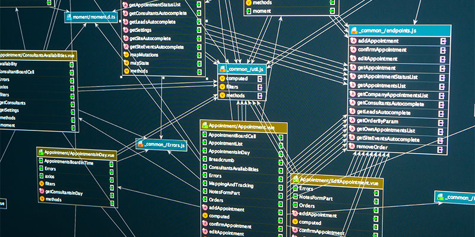

Power BI Dashboards and Reports
This section showcases my ability to create interactive Power BI dashboards and reports. Each project demonstrates skills in data import,
transformation, DAX calculations, and tailored visualizations that drive informed decision-making across various industries.
Machine Learning projects
This section highlights my expertise in building predictive models and applying machine learning algorithms. These projects showcase
skills in data preprocessing, feature engineering, model development, hyperparameter tuning, and time series forecasting, driving data-driven solutions in
finance, operations, and beyond.

Python projects
This section showcases projects that illustrate my ability to use Python for end-to-end data analysis tasks, from data collection,
cleaning, and preperation, to analysis, visualization and recomendation, demonstrating a comprehensive approach to deriving actionable
insights.
More

Web scraping projects
This section highlights projects focused on web scraping, where I employ Python's Selenium and BeautifulSoup, and Power Automate,
to extract, clean, structure, and store data from various online sources, showcasing my ability to automate data collection processes efficiently.
Automation projects
This section highlights projects that exemplify my expertise in harnessing automation tools, specifically Power Automate and Python,
to simplify complex workflows. These initiatives showcase my capability to implement automated solutions that drive efficiency and
reduce manual intervention.

SQL and database projects
These projects demonstrates my ability to design and create databases, craft complex queries, implement joins for efficient data retrieval,
and develop stored procedures and functions that streamline and automate tasks. I also showcase expertise in using triggers to maintain data integrity and
consistency. These projects reflect my commitment to building robust database solutions that support effective data management and analysis.
Microsoft Excel projects
These projects illustrate my advanced Excel capabilities, emphasizing data analysis and visualization, my ability to utilize complex
formulas, create dynamic PivotTables, and leverage Power Query for efficient data transformation. Additionally, I showcase my skills
in automating workflows through VBA, enhancing decision-making processes and operational efficiency